Chapter 2: Early Humans¶
Introduction¶
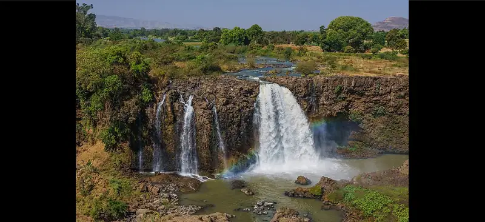
In 1974, while on a mapping expedition in Ethiopia (Figure 2.2), an American paleoanthropologist named Donald Johanson and a colleague stumbled upon a skeletal forearm and skull in a gully. Upon closer inspection, they not only found more bones but also realized that all of them had belonged to some type of early human. After careful work, Johanson’s team was able to recover about 40 percent of the skeleton, which they named Lucy after the popular Beatles song, “Lucy in the Sky with Diamonds.”
We now know that, though small, Lucy was an adult when she died about 3.2 million years ago. Scholars have learned a great deal since her discovery, about her but also about many of our other evolutionary ancestors. In the millions of years since Lucy walked the Earth, a number of early human species have come and gone. Some migrated out of Africa and populated portions of Asia, Europe, Australia, and the Americas. These different species developed new tools, learned to control fire, mastered language, and produced stunning works of art. Then, about twelve thousand years ago, some of our own species adopted agriculture. With this innovation, many early human groups began to end their hunting and gathering ways and establish settled communities.
![A timeline showing events from this chapter is shown. 3.3 million years ago: Pre-humans begin using stone tools. 2-3 million years ago: Homo habilis appears; a picture of a skull with eye sockets, a nose opening and long teeth on the right and left side of the upper jaw is shown. 2 million years ago: Homo erectus appears. 200,000 years ago: Homo sapiens start migration out of Africa; a map of the world is shown with Africa highlighted red and yellow and red arrows pointing out of the red highlighted region in Africa travelling all over the world. 100,000 years ago: Most recent glaciation period begins. 40,000 years ago: Neanderthals begin to die out; a picture of a brown skinned person is shown with messy long hair, deep, large eyes, and large teeth on a yellow background. 40,000 years ago: Venus of Hohle Fels carved from mammoth ivory; a carving with bumps at the top and two short legs coming off of the bottom is shown. 15,000 years ago: Humans arrive in North America. 12,000 years ago: Mesopotamians domesticate plants. 11,600 years ago: Göbekli Tepe founded.](img/osx-worldhist-a02-00-timeline.webp)
2.1 Early Human Evolution and Migration¶
Learning Objectives
By the end of this section, you will be able to:
- Discuss the process of human evolution in a biological and anthropological context
- Explain how and why Paleolithic humans migrated
- Describe the tools and technologies used in the Paleolithic Age
Millions of years ago, our distant ancestors descended from the trees, took to walking upright on the land, and gradually evolved into the species we are today. Their evolution was influenced by many variables, including changes in climate, diet, and survival strategies. Over time, humans developed new skills and tools to meet the challenges of endurance and sought better prospects for themselves through cooperation and migration.
Understanding these changes and the long-ago origins of our species has required careful research by archaeologists, anthropologists, genetic scientists, historians, sociologists, and many others. Through painstaking reconstructions and study, these specialists have used a relatively small number of archaeological finds and material remnants of our distant ancestors to paint a striking picture of our prehistoric past, going back millions of years. The nature of this work, however, requires using some extrapolation, educated speculation, and outright guesswork to piece together the bits of unearthed evidence into an intelligible story. This means that even as we have had to discard old theories when new information has emerged, there remain plenty of things we’ll simply never know for sure.
Human Evolution¶
The concept of evolution over time is one we are all likely familiar with. Consider, for example, how technology has evolved. The first true smartphones appeared on the market at the beginning of this century, but these complicated devices didn’t spring all at once from the minds of ambitious engineers. Rather, these engineers built on technology that had evolved and improved over many decades. In the mid-1800s, telegraph technology first demonstrated that electricity could be used for long-distance communication. That technology paved the way for the first telephones, which were basic and expensive but over many decades became more sophisticated, more common, and cheaper. By the early 1980s, electronics companies had begun selling telephones that used radio technology to communicate wirelessly. Over time these devices were made faster and smaller, and companies added features like cameras, microprocessors, and eventually internet access. With these evolutionary transformations, the smartphone was born.
Link to Learning
Use this guided activity from the Evolution Lab to explore how we study biological relationships between species using phylogenetics to learn more. Try to create your own “Tree of Life.”
Modern humans are not smartphones, and in human history, chance biological adaptations to a changing environment drove the evolutionary process rather than the minds of inventors conceiving of technical innovations. But the evolutionary process that eventually gave birth to our species resembles the technological evolution of smartphones and other devices in some important ways. Just like we can trace the evolution of the smartphone back to the telegraph, so can we trace our own evolution back to a very distant ancestor called Australopithecus, who lived in eastern and southern Africa between 2.5 and 4 million years ago. Lucy, previously mentioned, was of the genus Australopithecus (Figure 2.3). A genus is a taxonomic rank that includes several similar and related species within it. Like us, members of Lucy’s species afarensis (named for the Afar region of East Africa where she was found) were capable of walking upright and likely used tools. Beyond that, however, they were very different from us. They had plenty of hair like chimpanzees, fingers and arms well suited for climbing trees, and brains about one-third the size of ours. Despite these differences, scholars have concluded that the genus Homo (“human”) evolved from Australopithecus somewhere around two to three million years ago.
![A picture of unconnected pieces of a skeleton are shown on a white background. The bones are pale brown to dark brown in color and in broken pieces. From the top to the bottom, these bones shown are: five pieces of the skull, the lower jaw with teeth on the left side, one piece of the left clavicle, five pieces of the spine, six pieces of each arm, nine pieces of ribs from the left side, eight pieces of ribs from the right side, one piece of the lower spine, the tailbone, the right piece of the hip, the top of the right leg, one piece of the top of the left leg, the left knee joint, and a small piece of the left leg.](img/osx-worldhist-a02-01-lucy.webp)
Possibly the earliest member of the genus Homo was Homo habilis (Figure 2.4). This species appears in the archaeological record about two to three million years ago. Habilis means “handy”; it was thought at one time that this was the first species to have created stone tools. We now know that stone tools predate Homo habilis, but the name has stuck. Homo habilis resembles us in many ways, with a large brain similar to ours as well as small teeth and a face we might recognize as human. But members of the species also had many ape-like characteristics, such as long arms, hairy bodies, and adult heights of only three or four feet.
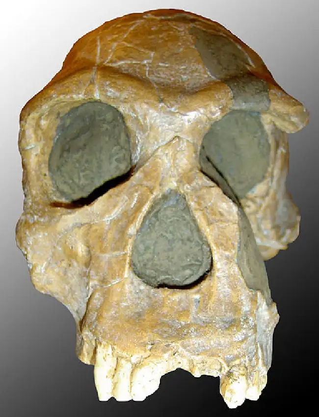
Around two million years ago, a species even more similar to us, Homo erectus, emerged in East Africa. It likely evolved from Homo habilis. As the name erectus for “upright” suggests, this species lived entirely on the ground and walked—even ran—exclusively in an upright position. The consequences of this evolutionary shift were huge. Being upright meant that the body’s digestive organs were pulled down lower and into a smaller space. That in turn necessitated a change in diet, away from tough plants and toward easier-to-digest items like nuts, fruits, tubers, honey, and even meat. Living on the ground was also more dangerous because it made eluding predators more difficult. However, the upright position left Homo erectus’s hands free to use tools. This advantage likely led to further evolutions that made human hands more dexterous over time, prompting the wider adoption of ever more sophisticated tools.
Members of Homo erectus shared other close similarities with modern humans. They were about the same height as we are, sometimes reaching just over six feet. They made and used relatively sophisticated stone tools and relied on fire for both warmth and cooking food. They likely constructed huts of wood and fur in which to live and worked cooperatively with each other to hunt and forage. The position of the larynx in the throat also suggests that Homo erectus may have had some capacity to communicate vocally, which would have aided in cooperative endeavors. Finally, archaeologists have uncovered strong evidence that Homo erectus cared for the sick and elderly. This evidence includes the discovery of the remains of individuals who suffered from debilitating diseases yet lived a long time, indicating that assistance was both necessary and provided by others. Together these characteristics made the species highly adaptable to changing climates and environments, helping explain why its members survived for so long. Homo erectus populations lived until as recently as about 100,000 years ago.
Sometime between 1.8 and 1.5 million years ago, Homo erectus started migrating into other parts of Africa and beyond, reaching North Africa, the Near East, Europe, and East and South Asia over hundreds of thousands of years. The reasons for this extensive migration are still debated, but they likely included climate change and the desire to follow certain types of prey. Homo erectus appears to have stayed close to rivers and lakes during migration, hunting and eating animals like rhinoceroses, bears, pigs, and crocodiles, as discoveries in the Near East have confirmed. Populations evolved to adapt to the different environmental conditions into which they moved. Over time this led to a diversity of human species, including Homo heidelbergensis; Homo neanderthalensis, or Neanderthals; Denisovans; and modern humans, or Homo sapiens (sapiens means “wise”). Some of these species, like Denisovans and Neanderthals, emerged outside Africa. Others, like Homo heidelbergensis and Homo sapiens, emerged in Africa first and later migrated to other areas.
The extent to which these different human species interacted with each other remains unclear. DNA evidence from a bone found in Siberia has shown that a girl (who died at age thirteen) was born there of a Denisovan father and a Neanderthal mother. Another recent study demonstrated that modern European and Middle Eastern populations have between 1 and 4 percent Neanderthal DNA. This appears to suggest that mating between Homo sapiens and Neanderthals was quite common. The careful work of archaeologists and other scholars has also made clear that some species evolved from others. For example, both Neanderthals and Denisovans appear to have evolved from populations of Homo heidelbergensis.
At some point between forty thousand and fifteen thousand years ago, the diversity of human species declined and only Homo sapiens remained. Two models attempt to explain why. The first and most commonly accepted is the “out of Africa” model. This theory suggests that modern humans emerged first in Africa approximately 200,000 years ago and then, approximately 100,000 years ago, expanded out of Africa and replaced all other human species. The second model is often called the “multiregional evolution model” and proposes that Homo sapiens evolved from Homo erectus in several places around the same time. This model emerged as an explanation for the great diversity of modern human traits in different populations around the world. But it relies primarily on the study of fossils and archaeological records rather than on genetic data.
These theories about human evolution are not necessarily mutually exclusive, and the real answer to the puzzle may be a combination of the two. For example, it’s entirely possible that modern humans or a common ancestor did emerge first in Africa. Then, as this species expanded around the world, it mixed its genetic information with that of other human species. The DNA evidence collected in recent years certainly suggests a more complicated picture, and the debate has not yet been settled. The tools of both archaeology and molecular genetics continue to reveal new insights into the puzzle of human evolution and the rise of Homo sapiens. And the conclusions we can draw about our distant past will continue to change as we learn more.
Dueling Voices: What Happened to Neanderthals in Europe?
For tens of thousands of years before Homo sapiens arrived in Europe, the continent was home to Neanderthals (Figure 2.5). Then, about forty thousand years ago, right around the time modern humans entered Europe, the species neanderthalensis began to rapidly die out. For more than a century and a half, scholars have been trying to understand why.
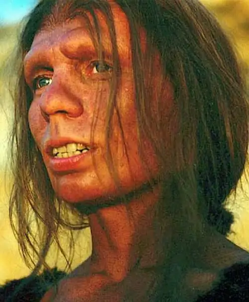
One theory is that modern humans replaced the Neanderthals in Europe through violent competition, including a type of warfare between the two groups. Another model argues that the competition was less about violence and more about resources. This theory posits that modern humans were simply better tool makers, had better survival strategies, and possibly experienced lower mortality rates and higher birth rates. Neanderthals simply couldn’t keep up, and their small population dwindled and then disappeared entirely.
Modern DNA analysis has opened the door for a new theory, that mating occurred between the two species and that the population of Neanderthals was simply absorbed by modern humans. The presence of small amounts of Neanderthal DNA in modern human populations lends some credibility to this idea, but it seems unlikely to explain the total disappearance of Neanderthals.
Finally, analysis of climate change in Europe has revealed some variations that could have weakened Neanderthal populations and led to their disappearance in some areas. As of now, no one theory can account for everything. It seems possible that several factors were at play rather than a single primary cause, so the debate goes on.
- How might more than one of these reasons, or all of them, have contributed to the decline of Neanderthals in Europe?
- Can you think of any other explanations for the extinction of Neanderthals?
Why Did Humans Move and Where Did They Go?¶
Archeological evidence indicates that Homo sapiens began migrating out of eastern and southern Africa as early as 200,000 years ago. This expansion took early humans deeper south, west, and north as far as the Mediterranean Sea. Approximately 100,000 years ago, groups of Homo sapiens left the African continent and began a global migration that lasted for tens of thousands of years (Figure 2.6). After crossing the Sinai into southwest Asia, early migrants out of Africa likely followed the coasts of Asia, and by about seventy thousand years ago, they had made their way into India and China.
![A map of the world is shown, with Africa shown on the left and North and South America on the right. The bottom third of Africa and most of its east coast are highlighted red, with two arrows coming off of those areas and heading west toward the western coast of Africa. Red indicates “Homo sapiens.” The number “200 000 years ago” is written inside the highlighted red portion in Africa. From the top of the red area in Africa, an arrow travels north into Europe and splits into two, one way heading west toward Portugal (with the number “40 000” alongside it) and splitting off in another branch from there heading east toward Asia (with the number “100 000” alongside it), and the other way heading east all over the world. From this split it heads east towards India (with the number “70 000” alongside it), with a branch heading up toward China. After India, it branches into two directions – one north and one south. The north branch heads up through China and Russia, with one part branching off into western Russia (with the number “25 000” alongside it). It continues north through Russia and crossing over to Alaska (with the number “15 000” alongside it), and south through Canada, with a branch heading southeast in the U.S. (with the number “12 000” alongside it). The original arrow continues south through Mexico and down into South America, where it branches off to the northeast coast. The original arrow continues to southern South America there is splits into two arrows, one heading south and the other heading southeast. A single red arrow is shown in the middle of Canada facing north of the Hudson Bay, with the number “4500” at the point of the arrow. The south arrow past India branches off in Burma and Thailand and heads south through Indonesia into Australia (with the number “50 000” at the end of the arrow), with another branch off that heading east (with the number “30 000” alongside it) and then south toward New Zealand (with the number “1500” at the end of the arrow). A single arrow points to Madagascar alongside the number “1500.” All of Europe is highlighted orange as well as a southwestern portion of Russia, Iran, Turkmenistan, Uzbekistan, and Kazakhstan. Orange indicates “Homo neanderthalensis.” The western portion of Africa is highlighted yellow as well as Saudi Arabia and the countries surrounding it - Afghanistan, Pakistan, India, China, North and South Korea, Burma, Thailand, Malaysia, and parts of Indonesia. Yellow indicates “Homo erectus.”](img/osx-worldhist-a02-01-m-homosap.webp)
Some groups continued moving south through Malaysia, into Indonesia and beyond. In places like Papua New Guinea and Australia, there is evidence of settlements at least forty-five thousand years old. Others groups making their way into southwest Asia from northern Africa entered Europe around forty thousand years ago, moving either along the Mediterranean coast or by way of Turkey into the Danube valley. By twenty-five thousand years ago, Homo sapiens had reached Siberia and other parts of northern Asia. And approximately fifteen thousand years ago, some groups in Asia crossed into North America, eventually reaching the tip of South America and settling at various locations in between.
This timeline has been pieced together based on the analysis of several archaeological finds. But our knowledge is still limited, and new discoveries frequently require adjustments to the proposed dates and patterns of global human migration. For example, we now know that because the Earth was in its most recent ice age during this period, areas currently covered by water were then dry land. This is true for large portions of maritime Southeast Asia as well as the Bering Strait between Asia and North America. Humans were able to walk as far south as Java and from Asia into Alaska.
Yet they also roamed as far as Australia, which was not connected by land to Asia in this period. This means they must have used rafts of some type, probably by crossing short distances between islands. Likewise, discoveries of human habitation dating from fourteen thousand years ago in South America suggest that rafts or boats of some kind may also have been used to skirt the North and South American coasts. No crafts have been or may ever be found, but we must assume they existed.
More interesting still, analysis of the remains of the eight-thousand-year-old Kennewick Man discovered in 1996 in Washington State reveals anatomical features more consistent with Southeast Asian populations than with those traditionally assumed to have populated the Americas. This discovery complicates the version of human migration we think we know, and if anything, it suggests there is much about the process that we may never fully understand.
But what triggered this migration in the first place? Despite the uncertainties, we can draw some speculative conclusions. We know that around the same time Homo sapiens began leaving Africa, the climate there was becoming increasingly dry. Drier conditions meant fewer of the plants and animals humans needed to survive were available. Modern humans were hunter-gatherers like their evolutionary ancestors, meaning they survived by employing the strategies of hunting animals and gathering wild plants rather than by planting crops and raising livestock. As hunter-gathering societies regularly forage over a large area, any scarcity of resources in some places or abundance in others encourages movement. In the lifetime of a single individual, a large-scale migration would have been barely perceptible, if at all. But over tens of thousands of years, human populations traversed an enormous portion of the globe. Nor did they go in a single direction or all at once. Groups likely moved back and forth over areas, responding to the climatic conditions and availability of resources. There were long periods of relative stasis punctuated by movement, creating waves of migration in various directions.
As humans moved into new environments, they adjusted their strategies to be successful under new conditions. This meant learning to gather different types of plants and hunt different types of animals they came into contact with, including mastodons, woolly mammoths and rhinos, various types of grazing animals, and giant sloths and beavers. The arrival of humans who were highly effective at survival occasionally accompanied major transformations in their new environments. Scientists who study now-extinct animals have recognized for some time that human hunting likely contributed to the decline of a number of these species. Before humans arrived approximately forty-five thousand years ago, for example, Australia was home to a number of large reptiles, a marsupial lion (which carried its young in a pouch), and huge wombats and kangaroos (Figure 2.7). These species began to vanish around the same time humans reached Australia and well before the climatic warming that led to the extinction of large animals in other places.
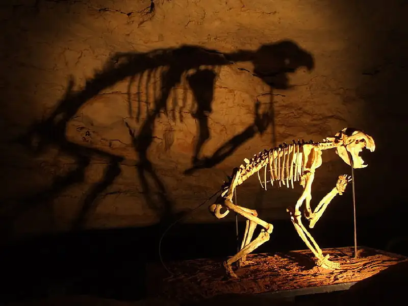
Early Human Technologies¶
To understand how early humans lived hundreds of thousands and even millions of years ago, scholars use the tools of archaeology to analyze the objects left behind. Many were made of materials like wood, animal skin, and earth, which rarely endure in the archaeological record. Bone items are somewhat more durable and have occasionally survived. But our window into the distant past is quite small. Stone items are the most likely to have lasted long enough for us to study them today. Beginning possibly as early as 3.3 million years ago, our distant pre-human ancestors began using stone tools for a variety of purposes. This event marks the start of the Paleolithic Age (lithos means “stone”), which lasted until nearly twelve thousand years ago.
The earliest known human-made stone tools date from about 2.6 million years ago. They were likely first created by Homo habilis, by smashing smooth rocks together to create crudely sharpened edges. The resulting implements are often described as Oldowan tools, and their use continued until about 1.7 million years ago. While a seemingly simple adaptation from our perspective, the development of Oldowan tools in fact represents a huge leap in human engineering ability. These sharpened stones served a variety of cutting, scraping, and chopping purposes. They were highly efficient tools for killing animals, butchering meat, smashing bones to access marrow, and a host of similar tasks.
Beginning around 1.7 million years ago, some ancient humans began to develop a new and more sophisticated style of stone tool by carefully chipping away smaller flakes of the stone core to create a teardrop-shaped implement often described as a hand-axe. Far thinner and sharper than the Oldowan tools, hand-axes were even better at the cutting, scraping, and chopping tasks for which they were designed. They were such an improvement over earlier tools that archaeologists have given them their own name. They are called Acheulean tools (pronounced ah-SHOOL-ee-an), after Saint-Acheul, the site in France where they were first found in the nineteenth century CE. Since then, more Acheulean tools have been uncovered in Africa, the Middle East, and India and scattered in parts of East Asia (Figure 2.8).
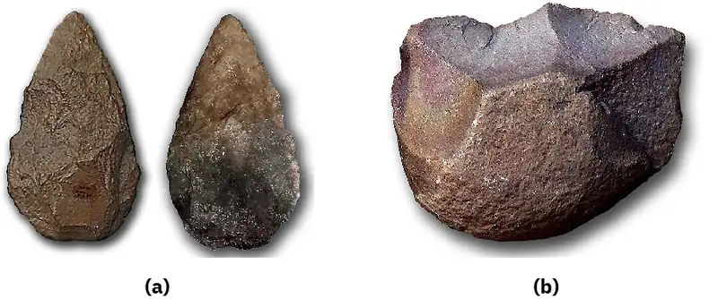
Far superior to the Oldowan variety, Acheulean tools remained the dominant style of stone tool until as recently as about 250,000 years ago. At that time a new type of utensil emerged in Europe, North Africa, and southwestern Asia. Called Mousterian tools, these implements were smaller hand-axes and tools made from stone flakes rather than cores. In older traditions, the flakes had been removed in order to shape the core as desired, such as into a hand-axe. But in the Mousterian tradition, sometimes the flakes were chipped off in such a way that they themselves could be used as small knives for cutting meat, scraping leather, and serving as spearheads attached to shafts (Figure 2.9). Advances to the Mousterian techniques later led to other tool traditions. By around forty-five thousand years ago, humans were making a great diversity of specialized tools from stone flakes. These included a variety of scrapers as well as engraving tools for carving and carefully reshaping softer materials like bone and antler into either tools or works of art.
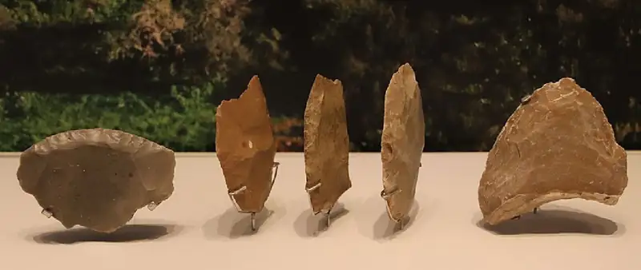
Another important tool of our human ancestors was fire. When exactly humans began controlling fire remains a topic of debate. There is evidence that earlier ancestors like Homo erectus used it, but we don’t know whether they were able to start fires or merely used and perpetuated those that naturally occurred. It’s clear, however, that by at least about 125,000 years ago, if not much earlier, modern humans had learned to start and control fires.
Controlled fires were useful for staying warm in cold climates, scaring off predators, and cooking meat to make it easier to consume and digest. Archaeological finds also suggest that controlled fires aided in the manufacture of certain tools. Wooden spears could be hardened in the flame, making them more effective hunting implements. Some types of stone could be treated with heat to make them easier to chip and mold. Fire also played an important social function. Gathering around the heat and light likely aided in bonding and helped build the social connections vital for cooperative activities and group survival.
Sitting around a fire may also have been an occasion for early humans to display one of their most powerful tools, the unique ability to use sounds as language. There is some speculation that earlier human ancestors like Homo erectus were able to make sound and possibly had a type of language. We’ll never know for sure. But we do know that modern humans are capable of making a great variety of different sounds. Biologists calculate that we can produce fifty different phonemes, or distinctive sounds. When strung together in a sophisticated manner, these phonemes can produce many tens of thousands of words to describe what we see, feel, do, and imagine. Beginning at least 100,000 years ago, modern humans began using language in this fashion, gaining a major advantage over competing animals. With language, they could coordinate daily tasks, work much more efficiently in groups, communicate abstract ideas, and pass important information to successive generations. Few tools aided modern humans more than their ability to communicate with complex languages.
While they left no record of their discussions, early humans did leave a number of impressive artistic depictions. The work that has survived includes small animal and human sculptures, usually made of carved bone or stone. The human-shaped items are often of large, possibly pregnant, women and might have served as symbols of fertility. There are also preserved hand prints, created by placing a hand on stone and blowing pigment around it to preserve the image of its shape.
Some of the most stunning prehistoric art still in existence today consists of cave paintings dating as far back as forty thousand years. Many painted caves have been discovered in Spain and France, but there are also examples in England, Italy, Germany, Russia, and Indonesia. The paintings in the Cave of Altamira in northern Spain are prime examples of this type of art. Within the cave, and dating to about thirty-six thousand years ago, are more than two dozen large images of animals including bison, bulls, horses, deer, and boars. Each is painted in impressive detail using combinations of charcoal and ochre (a pigment made from clay) to produce bold reds, yellows, browns, and blacks. In many instances, the artists incorporated features of the cave walls as part of their designs, giving three-dimensional shape and definition to the animals they drew (Figure 2.10).
![Two pictures are shown. (a) The first picture shows a drawing of a bison on a rocky, cracked, brown wall. The animal’s body is drawn in red with a black underside and tail, black pointy hair in the middle of its back, a black tuft under its mouth and black eyes. The legs are outlined in black and there are black horns on the top of the animal’s head. There are other black and rust colored markings around the animal in various shapes. (b) A picture of a gray, stone wall is shown standing on a tiled floor with sun streaming from windows on the opposite side. The stone wall shows pictures of rust-colored animals all over, with one animal close to the front a light black color. The bumps in the wall make the animals stand out.](img/osx-worldhist-a02-01-altamira.webp)
Beyond the Book: Interpreting Artistic Expression in the Paleolithic Age
We often think of visual art as a relatively modern gesture consisting of works like oil paintings, sculptures, and even computer-designed images. But artistic expression among our species is quite ancient. We may never know how much art was produced tens of thousands of years ago; many examples have probably been lost. But what we do have is fascinating to behold, though interpreting it is much like trying to reconstruct an entire puzzle from just a few pieces.
Some of the most interesting and perplexing artistic works include a number of female images sometimes called Venus figurines. These are relatively small statuettes (one to sixteen inches in height) that were carved from stone, ivory, bone, or clay to resemble women. The tiny Venus of Hohle Fels, discovered in Germany, is the oldest such object found to date (Figure 2.11). Carved from mammoth ivory, it dates to about forty thousand years ago, and what remains of it depicts a woman with large exaggerated breasts. This feature has led some anthropologists to conclude that it was intended to represent sex, reproduction, or fertility.
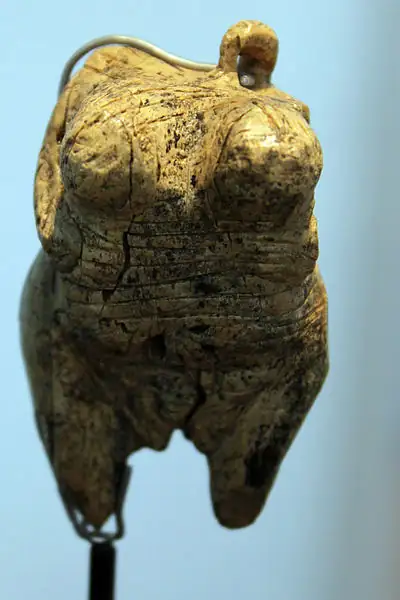
Similar to the Venus of Hohle Fels and also discovered in Germany is the Venus of Willendorf (Figure 2.12). This female figurine, less than five inches tall, may be as much as thirty-three thousand years old. Like other such images, it shows a woman with exaggerated breasts and a stylized head with no facial features. Analysis of it has produced a number of interpretations, from the traditional representation of fertility to a type of self-portrait.
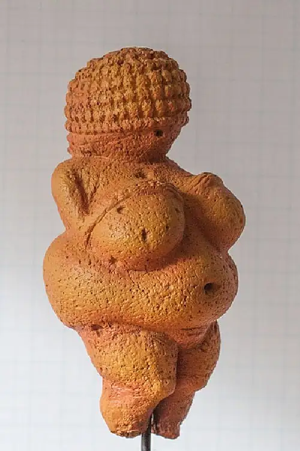
Unlike the preceding examples, the Venus of Dolní Věstonice, discovered in the modern Czech Republic, is made of ceramic (Figure 2.13). It stands just under four and a half inches tall and may be as much as twenty-nine thousand years old.
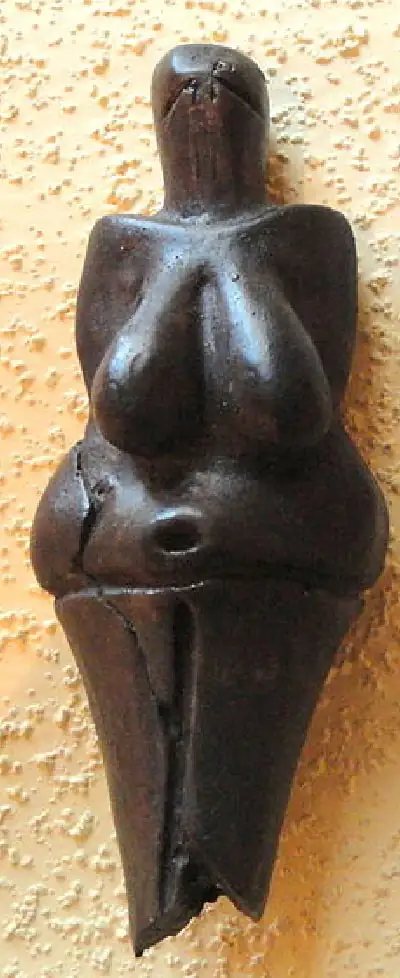
Various other female figurines have been found as far from Europe as central Russia, and while individually unique, all have the same characteristics. They are small and were likely intended to be portable. They have exaggerated breasts and often show reproductive organs. They have large bellies that may reflect pregnancy. But without some record from the people who created them, their true symbolism and use will likely remain a mystery.
- Why do you think these figurines are often interpreted as being related to fertility? Do you think that interpretation is plausible? Why or why not?
- What interpretation of these figurines would you suggest, based on the information you’ve read and seen here?
The significance that cave paintings held for the people who created them may never be fully understood. It was once believed the images were designed to be popularly admired as interesting decorations, not unlike the ornaments we put in our homes today. But given that they are often deep in the dark interiors of the caves, where sunlight could not reach, this interpretation has mostly been abandoned.
With limited insight into the minds of the artists, scholars have concluded that the art likely served some unknown religious purpose. Many speculate that the caves could have been used by shamans—men and women thought to have a special knowledge of the spiritual world—who might have crawled deep into the interior to commune in ceremonies with a type of spiritual force. Such interpretations remain little more than educated guesses. What is indisputable is that the art demonstrates that even tens of thousands of years ago humans had the unique ability to reproduce the world around them in complex, symbolic fashion, through images we can immediately recognize today.
2.2 People in the Paleolithic Age¶
Learning Objectives
By the end of this section, you will be able to:
- Explain how the environment shaped the way people lived in the Paleolithic Age
- Describe the day-to-day life of people in the Paleolithic Age
- Discuss Paleolithic Age peoples and their likely attitudes toward the environment, gender, religion, and social hierarchy
Living in an age when global temperatures are gradually rising, we are well equipped to recognize the impact of climate on daily life. For much of their existence, however, Earth’s early peoples lived in an ice age, when temperatures were colder and ice covered areas that are now forested or farmed. Hostile climates tend to create a scarcity of key resources and require that people spend more time securing those necessities. Early humans thus relied on one another and their communities for basic survival, forming small tight-knit groups that migrated to ensure their access to edible plants, water, and game. In regions where food was more secure, such as in lush environments with ample water supply, settlements were more permanent and people had more time for artistic and social endeavors.
But survival was generally difficult and cooperation vital. This is one reason egalitarianism was common among prehistoric hunter-gatherers, as it still is among the few remaining groups that pursue this survival strategy today. However, men and women in early human groups often had different responsibilities. For example, women tended to gather while men hunted. Across the planet, groups relied heavily on existing resources harvested from their natural surroundings, and any change or challenge could spell disaster. Yet people proved to be resilient and innovative.
Link to Learning
We know that our Paleolithic ancestors communicated with each other through language and that this exchange was vital for cooperation. But did they also have a type of written communication? Some researchers think it’s possible that seemingly abstract signs preserved in caves represent just that. Watch this short video about fascinating scholarship around these intriguing cave signs to learn more.
Ice, Ice, and More Ice¶
Scientists who study the changes that have occurred on Earth over billions of years have identified at least five significant periods of cooling on the planet. These are often called ice ages, and each has included multiple glaciation periods during which glaciers grew on the land.
A few factors can trigger an ice age, but generally such climate changes occur when insufficient sunlight is able to reach the planet’s surface. Then temperatures drop in northern latitudes, resulting in the accumulation of ice. As the glacial ice sheets grow and spread across the land, water is pulled from the oceans, causing sea levels to decline. Even areas closer to the equator, where ice is unlikely to develop, can experience dramatic climate change during these cooling periods. Otherwise-tropical areas can experience drying, causing rivers to disappear, lakes to turn into swamps, jungles into savannahs, and grasslands into deserts. These changes have a huge effect on plants and animals, leading to evolutionary adaptations in some and extinction in others. These are all natural processes, and each recorded ice age in our planet’s history has eventually come to an end when more sunlight reaches the Earth and causes the temperature to rise and ice to melt.
The most recent glaciation period began a little over 100,000 years ago and reached its peak about eighteen thousand years ago (Figure 2.14). The ice age of which this glaciation period was a part ended approximately twelve thousand years ago. At peak glaciation, ice sheets sometimes two miles thick covered the land around the North Pole and extended outward over much of present-day Russia, Scandinavia, the British Isles, Greenland, Canada, and the northern reaches of the United States.
![A map is shown viewing the North Pole from above. Asia is shown on the left, the North Pole in the middle, and North America is on the left. Most of Asia is highlighted yellow as well as the southern portion of North America and half of Alaska. Areas that are highlighted light blue are: small portions throughout Asia as well as most of the northern portion of Asia, Greenland, and most of northern North America. Areas that are highlighted blue indicating “Summer Sea Ice” are: the North Pole and the waters between Alaska and Russia as well as the waters surrounding Greenland and by the northeastern portion of the U.S. Areas highlighted dark blue for “Winter Sea Ice” are the waters from the west coast of the U.S. to the east coast of Asia as well as the waters from the northeastern coast of the U.S. to the northern areas of Europe. “Gobi” is labeled toward the bottom of Asia and “Himalaya” is labeled in eastern Asia. “Alps” are labeled in Europe, “Ural” is labeled in northern Asia, and the “Rocky Mountains” are labeled in the western U.S.](img/osx-worldhist-a02-02-m-glacia.webp)
The consequences of these climatic transformations for modern humans have been huge. It is probably not a coincidence that at approximately the same time Earth entered its last glaciation period, humans began their global expansion. Climate changes in Africa were likely a decisive factor in encouraging and enabling them to move into other parts of the world. Low sea levels allowed modern humans to expand into maritime Southeast Asia and Japan and reach Australia. And not long after Earth reached peak glaciation, the first human migrants entered North America from Siberia, by way of a strip of land exposed by low sea levels.
Modern humans who moved into colder conditions had to adjust to their harsh environments. For example, they created new forms of clothing, unnecessary in warmer climates but vital now, by removing the hides from hunted animals with various types of rock tools and scraping them clean. The earliest clothing must have been simple and likely functioned as blankets draped over the body to keep warm. However, by around thirty thousand years ago, modern humans had developed the earliest known sewing needles, making them of bone, wood, and ivory. Like their modern counterparts, these needles had sharp points at one end and a hole in the other. With thread made from animal remains or wild flax, humans could now piece together bits of soft animal hide from foxes, rabbits, and deer to produce far more sophisticated and tight-fitting clothing.
The five-thousand-year-old remains of a man discovered in the alpine region between Austria and Italy in 1991 and dubbed Ötzi provide us with some indication of the type of clothing that could be created (Figure 2.15). Ötzi was dressed in a heavy coat made of goat and sheep hides stitched together. He also wore tight-fitting leggings of similar materials, a bearskin cap with a chin strap, and shoes constructed from woven grass, tree fibers, and deer hide. This type of clothing was far more functional than earlier designs and would have allowed populations to survive in frigid areas.
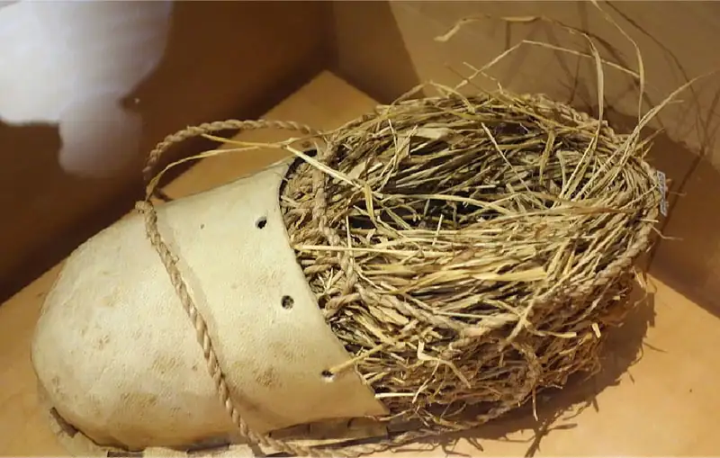
The warming of Earth and retreat of the glaciers that began around seventeen thousand years ago submerged continental shelves around the world and created new lakes and rivers. These changes in turn created opportunities for exploiting fresh- and saltwater marine life in the new waterways and the warmer shallow waters along the coasts. Many human groups were now exposed to a greater variety of animals that they could use to supplement their diets. As other animals like reindeer adapted to life in cold environments and moved north, the human populations that hunted them moved north as well. The higher water levels also helped to isolate some groups, however. Those that had migrated into maritime Southeast Asia and Australia found themselves more secluded on islands in the south Pacific. Those that had crossed into the Americas from Asia were cut off from populations in the eastern hemisphere as sea waters rose in the Bering Strait. The civilizations they created in North and South America remained largely separated from the rest of the world until the fifteenth century CE.
Life in the Paleolithic Age¶
Until as recently as twelve thousand years ago, human populations around the world remained very small and relied on subsistence hunting and gathering for survival. A typical group of early humans could be as small as fifteen people and perhaps as large as only forty (Figure 2.16). These groups were further subdivided into family units. Their small size should not be surprising, since they had only the naturally occurring resources around them to depend upon. But it also contributed to the development of close relationships between members of the group, an advantage in a world where cooperation could mean the difference between life and death. Groups much larger than forty or so would have struggled to live on the scarce resources of an area and found cooperation difficult to achieve. Any groups that became too large would by necessity have split up and found other areas and other resources.
![A drawing is shown of three people on a flat area of a hill. They all have dark skin and are naked except for small loincloths. The one on the left is sitting with his back showing, white feathers on his head and his bow and arrow on the ground to his left. A black dog-like animal sits in front of him. The other two men are standing, both with tall headdresses of thin slats with their bows and arrows on their backs. In the bottom left of the drawing, an adult in a brown cloak stands holding a small child while a naked child holds on to their leg. Two more people wearing cloaks are seen in front of them and other minute people are in the far distance. In the right of the picture six people are shown standing and sitting in front of rounded huts on a raised area. Smoke is shown rising up. The landscape is hilly with pale green, brown, and gray colors.](img/osx-worldhist-a02-02-smallgroup.webp)
Diets for humans in this period consisted of nuts, fruits, berries, wild grains and honey, fish, birds, shellfish, insects, and other animals. What people ate depended heavily on the environments in which they lived. Those in lush, warm environments had access to a variety of edible plants and animals. In more frigid and icier environments, they depended more on animals and fish. Fishing strategies likely included the use of spears but also nets and even hooks made of bone. Land animals eaten for food were either scavenged from remains left behind by other predators or hunted by humans themselves. Most hunting likely focused on smaller animals.
But large-game hunts did occur. Archaeological remains and cave paintings indicate that humans hunted deer, horses, gazelle, bison, and even very large animals like woolly mammoths. We know from archaeological work done in the Americas that as early as twelve thousand years ago, modern humans occasionally drove bison herds over cliffs to their deaths in order to process their meat and hides. Similar methods were likely used in other places to hunt various species of herding animals around this time or even earlier. Hunting woolly mammoths tens of thousands of years ago would have required a lot of group cooperation and the use of sophisticated tools like spears. It would also have been very dangerous, and scholars debate how common it really was. But killing a mammoth would have been highly desirable; a typical animal weighed around six tons, and harvesting it would provide a good supply of meat, hide, and bone for a small group.
For shelter, early humans commonly used both built structures and naturally occurring refuges like caves. Archaeologists around the world have unearthed evidence suggesting that some populations occupied a single cave for tens of thousands of years. The Panga ya Saidi cave in Kenya, for example, may have been home to humans for as long as seventy-eight thousand years. When caves weren’t available or when populations needed to be more mobile, humans designed their own shelters using wood, bone, animal skins, and other items gathered from the surrounding area. Evidence of shelters constructed of mammoth bones and covered with animal hides has been uncovered in several locations in Eastern Europe, including Ukraine, Poland, and the Czech Republic. These encampments may have been used as long as twenty-five thousand years ago.
There are strong indications that modern humans living even tens of thousands of years ago had developed some form of spirituality, perhaps even a kind of religion. As they are today, spirituality and belief in the supernatural were a way of making sense of the world. Natural occurrences like sunsets, earthquakes, comets, lightning, volcanoes, and many events for which we have ready scientific answers may have held supernatural significance for our Paleolithic ancestors. If modern practices are any guide, Paleolithic humans likely had religious traditions similar to animism—the idea that a degree of spirituality exists not only in people but also in plants, inanimate objects, and even natural phenomena like fires. The detailed cave paintings of bison, deer, and other animals left behind by these distant ancestors may be some of the few surviving traces of their ideas about the supernatural. It is even possible they recognized some members as religious figures. Such shaman men and women would have provided some connection between this world and another less understood world beyond.
We do know that modern humans and even Neanderthals buried their dead, and they frequently placed common household items in the grave when they did. A few rare burial sites found in eastern and southern Europe and dating back thirty thousand years were particularly ornate. Some included ivory spears and discs, along with bodies carefully covered in red ochre and beads made of both mammoth ivory and fox teeth. But most burials discovered so far were fairly simple. While it’s tempting to draw conclusions about a belief in the afterlife from such finds, it’s impossible to know for sure what significance these burials had for the people who performed them.
By studying archaeology and observing modern hunter-gatherers, many have concluded that ancient hunter-gatherer societies were very egalitarian. The small size of the groups, the lack of wealth, and the nomadic lifestyle were likely the reasons. But it is difficult to know exactly how egalitarian early human societies were. There was clearly some degree of differentiation within them. Just like today, within even a small group there would have been varying degrees of physical ability, intelligence, charisma, and other traits. Group members would surely have recognized these differences and used them to their advantage.
Older interpretations of social organization suggested that men did most of the hunting while women did the cooking or stayed home to nurse children. More recently, some have suggested that Paleolithic men and women both made a number of contributions to society. Meat, likely hunted mostly by men, would have been highly prized, but plants and other foods gathered mostly by women may have contributed as many if not more valued calories to the group. It is also likely that if men were away hunting, then by necessity women would have taken care of everything else. This meant protecting homes from attack, repairing shelters, and making tools.
Diverse Paleolithic Peoples¶
Our window into Paleolithic life is small and opaque. Scholars have thus had to rely mostly on observing hunter-gatherer societies that exist today and extrapolating from their experiences. Relatively few such populations still survive, and they are found in only a few places around the world where producing food simply isn’t practicable or desirable. These include the Kalahari Desert of southern Africa, the forests of equatorial Africa, the far Arctic, Tanzania, parts of western Australia, and a few other places.
The San people of the Kalahari Desert in southern Africa have often been studied (Figure 2.17). They live today in parts of Botswana, Namibia, and Angola, and those who still practice a traditional lifestyle do so in groups of up to sixty people that include members of several related families. The San survive by foraging on wild vegetables, nuts, fruit, and insects. They also rely on hunting wild game like antelope with throwing sticks, spears, and small bows that shoot poison-dipped arrows. Their groups are largely leaderless, though in certain instances respected hunters or older men might wield some authority.
![A picture of shown of seven people in a dried out, brown field with white bushes and brown trees in the distance. All of the people are dark skinned with short, black hair and brown cloths or furs around their waists. They wear a variety of brown or colorfully patterned tops and all but one wear a blue, black, and white striped headband on their head. The man on the left stands with one hand on his head and the other holding a walking stick. A small boy stands next to him, wearing a white collar, obscured by a woman in front of him holding an object in both her hands. Another person stands next to her looking at the object. One person sits on the ground in front, while two squat to the right, all looking at the ground.](img/osx-worldhist-a02-02-sanfire.webp)
Despite this egalitarianism, the San do maintain some important divisions of labor based on sex. For example, men are expected to create fires for cooking and warmth, which they do by rubbing sticks together to create heat and adding a bit of dry grass so that it ignites. Men are also the primary hunters for the group, though women sometimes participate. Women’s responsibilities include gathering, as well as building traditional shelters from tree branches covered in long grass. These shelters are light and can be built quickly to allow the group to move regularly when necessary. Water is a constant concern in the very arid Kalahari environment, and the San can live on relatively little of it. They collect it from certain plants and special watering holes, frequently using hollowed-out ostrich eggs to collect and store it for later use.
In the Arctic region of northern Alaska, Canada, and Greenland, where conditions are very different from those in the Kalahari, the Inuit people practice a form of hunter-gatherer lifestyle suitable to that environment. Like other hunter-gatherer groups, they live in relatively small bands made of multiple families and are generally much more egalitarian than settled societies that depend on agriculture. There are few plants to gather but an abundance of birds and animals to hunt and fish, including caribou, walrus, bowhead whale, seal, polar bear, muskox, and fox. In addition to providing meat and fuel, these animals have hides the Inuit use to make ocean-going vessels and thick clothing to protect them from the harsh cold (Figure 2.18). The plants that can be gathered in some warmer regions include grasses, roots, and seaweed.
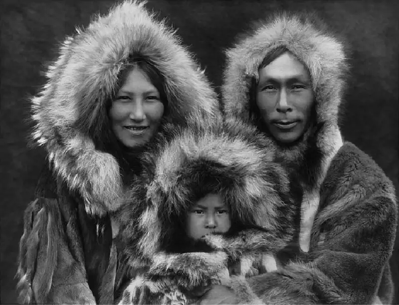
As is common among hunter-gatherer groups, men tend to do the hunting and fishing while women care for the children, maintain the home, and process the food that is hunted or gathered. The relatively limited supply of plants in relation to animals has exerted a strong influence on Inuit society. Since by far the largest part of the diet is produced by hunting and fishing, the emphasis on these male-dominated activities is strong. Hunting and fishing are also very dangerous occupations in which death and serious injury are common. The result is that women have traditionally outnumbered men in Inuit bands. In the past this ratio has led to higher rates of polygamy and even infanticide. The accumulation of numerous wives by some men has also sparked jealousy and violent rivalries among kin.
Both the San and the Inuit have had considerable exposure to the settled agricultural societies around them, and modern technology has influenced the way they live. For example, the Inuit today often use firearms to hunt in ways they could not have done several centuries ago. But one hunter-gatherer society that has still had only limited exposure to agricultural societies is the Awá people of the Brazilian rainforest. The known behaviors of the Awá thus provide scholars a picture of hunter-gatherer societies that may be closer to that of our distant ancestors.
Unlike the San and the Inuit, who live in environments where many resources are scarce, the Awá inhabit a very plentiful and lush environment. There are relatively few of them, only about three hundred and fifty, and their semi-nomadic hunter-gatherer lifestyle is not a vestige of ancient practices. Rather, it is believed that as recently as the nineteenth century CE they abandoned previously settled communities and moved deep into the Amazon River basin to live as they currently do. Despite their relatively late adoption of this lifestyle, the Awá display many of the societal characteristics common among other hunter-gatherer groups. They are highly egalitarian. They own relatively few material objects. They live in small groups of up to thirty. And they survive by hunting animals and gathering edible plants from the surrounding environment. A traditional and highly valued gathered plant is the fruit of the babassu palm. In addition to relying on this oily and protein-rich fruit, Awá groups also survive on the abundant fish in the wet rainforest and hunt numerous other animals using bows and arrows.
The different environments in which the world’s remaining hunter-gatherers live have inspired very different understandings of the supernatural. The Inuit have a rich mythology that includes stories of fantastic hunts and incredible creatures that inhabit the world. The northern lights, a natural celestial display common in very high latitudes, is seen as a feature of the supernatural that can be both comforting and terrifying.
Many San religious beliefs revolve around a sometimes helpful and sometimes foolish being called Kaggen. Kaggen can take the form of numerous animals, including certain insects. The San also practice numerous types of rituals for important life events, such as a young boy’s first kill and marriage. They recognize certain members of their group as shamans with a special connection to the supernatural world.
The Awá perform unique religious ceremonies during special times, such as evenings with a full moon. They also practice rituals that take them to a spirit world where they can request special intervention on Earth.
2.3 The Neolithic Revolution¶
Learning Objectives
By the end of this section, you will be able to:
- Discuss the Neolithic Age
- Explain the consequences of the Neolithic Revolution
- Describe Neolithic settlements around the world and their significance
From the time Homo sapiens emerged and for tens of thousands of years afterward, members of the species lived a life of hunting and gathering, much as their distant ancestors had. Then, about twelve thousand years ago and for reasons that remain imperfectly understood, some modern human populations adopted agriculture. This means they transitioned away from existing on merely the sustenance nature provided. Instead, they began actively promoting the growth and eventual transformation of crops, and later the domestication of animals, to provide themselves with the resources they needed. This shift in strategy inaugurated the Neolithic Age.
The birth of agriculture triggered a host of additional changes in the way humans understood land, the way they organized socially, the amount and forms of wealth they could acquire, and even the religious traditions they practiced. Not everyone made the leap to farming, however. Plenty of hunter-gatherer societies avoided transitioning into a settled agricultural life, either because the new strategy wasn’t practicable in their environment or because for them the costs outweighed the benefits. Yet those groups that did become agriculturalists experienced a degree of population growth and labor specialization that ultimately allowed for the establishment of a number of sophisticated Neolithic settlements.
The Development of Agriculture¶
Possibly the most important transformation in the history of modern humans was the shift from hunting and gathering to a life based primarily on agriculture. We call this shift the Neolithic Revolution. But the revolution didn’t happen in just one place or at one time. Instead, it occurred independently at different times and in several different areas, including the Near East, China, sub-Saharan Africa, Mesoamerica, and South America.
Each region domesticated different types of plants. In the Near East it was grains like wheat and barley. In Mesoamerica it was squash and later maize, or corn, and in China millet and rice. These plants grew naturally in those areas and were gathered in their wild form for many thousands of years before they were cultivated deliberately. The shift to agriculture brought enormous transformations to human populations around the world. It made it possible to feed much larger groups, necessitated the abandonment of hunter-gatherer-style egalitarianism, prompted the domestication of animals, and ultimately made way for human civilization as we understand it.
The reason some human populations undertook this important evolution remains imperfectly understood. However, it’s likely not a coincidence that the earliest known adoptions of agriculture occurred not long after the end of the last ice age, about twelve thousand years ago. This climatic shift altered animal migration patterns and probably brought much drier conditions to places like the Near East, where we find the earliest evidence of plant domestication. Climate conditions may have put a strain on food resources and prompted a shift in survival strategy. For example, humans might have attempted to help edible plants grow by moving them to places where they didn’t grow before or had stopped growing. Populations already settled in one area might have begun to notice that seeds from the plants they were gathering would grow where they were left. Further observations likely prompted additional human interventions in order to produce more.
Beyond the Book: Göbekli Tepe
The archaeological site of Göbekli Tepe is located in what is now southeast Turkey near the Syrian border. It includes a number of large circular and rectangular structures, large T-shaped stone pillars, and numerous pieces of stone art depicting boars, snakes, birds, foxes, and other animals, made with both skill and care (Figure 2.19). It has been known for several decades, but it was only in the 1990s that German archaeologist Klaus Schmidt began conducting extensive excavations and studies.
![An aerial photo is shown of an old structure made up of stones and dirt. There are four circular areas throughout the picture and one square area with stones in various shapes arranged inside the areas, some on the ground and some stacked on each other. Rectangular, large stones are arranged around the perimeters of those areas, lighter in color than the rest. Around the perimeter of the entire area, there are square areas, mostly filled with dirt, showing the walls of the areas sticking up from the ground. One square area toward the top right of the picture is filled with more stones and is dug deeper than the rest.](img/osx-worldhist-a02-03-gobeklitep.webp)
One of the most fascinating characteristics of Göbekli Tepe is that some of its earliest structures, built about 11,600 years ago, predate the domestication of agriculture. Indeed, the earliest evidence we have for agriculture at the site dates to about one thousand years later. Until this discovery was made, scholars assumed that agricultural production was a necessary prerequisite for megalithic architecture like that at Göbekli Tepe. The evidence here, however, led to an important reevaluation of our understanding of the Neolithic Revolution: What if settled communities and megalithic architecture led to agriculture, rather than the other way around?
Schmidt concluded that the site was a temple of sorts, where hunter-gatherer peoples from surrounding areas assembled at times to practice their religion and cooperate in building a stone site suitable for their religious purposes. Rather than religion and temple building emerging from agriculture, as had been commonly believed, Schmidt concluded that religion emerged first, and agriculture and the domestication of animals came later.
Since Schmidt published his findings, others working at the site have developed new and even more interesting conclusions. Discovering that Göbekli Tepe was actually a year-round settlement, archaeologist Lee Clare suggested that rather than bringing about agriculture, the people who built it may have been resisting it. The many carvings of animals at the site, he argued, might represent narrative connections to the hunter-gatherer lifestyle to which they were trying to cling as the world around them was embracing farming.
Both these conclusions challenge our earlier understanding of the Neolithic Revolution. And neither is likely to be the last word on what was happening at Göbekli Tepe.
- Which theory about Göbekli Tepe sounds more plausible to you? Why?
- Why might hunter-gatherer people take time to build a religious site? What does this suggest about the importance of religion for them?
Not all regions of the world had the right conditions in place to encourage a shift from hunting and gathering to settled agriculture. Among those regions that did, and where agriculture first flourished, were Mesopotamia, southern Turkey, and Israel. On a map, these places take the shape of a large crescent bending through the Near East. For this reason, the area is often referred to as the Fertile Crescent.
It was here that about twelve thousand years ago people began domesticating edible wild grasses to create what we know today as wheat and barley. Later, other species of plants were domesticated: peas, lentils, carrots, olives, and dates. Around ten thousand years ago, Asian peoples living on the Yangtze and Yellow Rivers began farming crops like rice, millet, and soybeans. In sub-Saharan Africa, likely around modern Sudan, people began actively cultivating sorghum, possibly as early as six thousand years ago. Over time they added crops like peanuts and sesame. Around the same time, groups living in central Mexico began cultivating maize (corn). Later they added crops like beans, squash, and peppers. Farther south, in the Andean region, around five thousand years ago people began to grow potatoes.
Each instance of the independent emergence of agriculture was followed by the expansion of these techniques to other areas. Wheat cultivation spread from the Fertile Crescent across the Mediterranean region and into northern Europe. Rice farming was adopted across large parts of eastern Asia where the crop would grow. Maize eventually expanded across Mesoamerica; in time, it reached as far north as the modern United States and as far south as the Andean region.
The key change brought by the rise of agriculture was not only that humans began to grow their own plants rather than just finding them where they grew naturally. It was also that humans, rather than their environment, became the deciding factor in determining which plants would grow. Since humans were selecting plants for their edible properties, their intervention led to gradual but important transformations in the plants themselves. For example, ancient wild varieties of wheat and barley had heavy husks around their edible seeds. These husks protected the seeds so that they could survive over the winter and sprout in the summer. But humans were primarily interested in the seeds, not the inedible husks. By selecting wheat and barley plants with thinner husks and more seeds year over year, humans transformed the plants over time into varieties of wheat and barley more suitable for their purposes. This domestication process occurred with numerous types of plants in different areas around the world.
The rise of agriculture also led to the domestication of numerous types of animals, often selected for characteristics that were beneficial to humans, such as docility, strength, ability to feed on readily available foods, and rapid growth and reproduction so the animals could be slaughtered for food. Some of the many animals domesticated in the Neolithic Age were sheep and goats in the Near East around ten thousand years ago, chickens in south Asia around eight thousand years ago, horses in central Asia around six thousand years ago, and llamas in Peru about the same time (Figure 2.20).
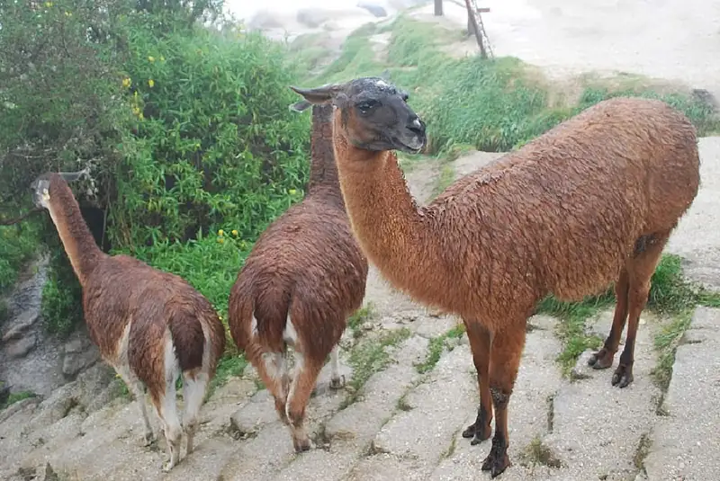
While the advantages of plant and animal domestication seem obvious to us today, some groups either could not or simply did not adopt these practices. The Indigenous peoples of Australia, for example, lived in environments that would have supported agriculture, and some of them were in contact with groups from New Guinea that did farm crops like taro and yams. Yet the early Australians continued to practice a mostly hunter-gatherer lifestyle until Europeans arrived about two hundred and fifty years ago. They apparently consciously determined that hunting and gathering were more suitable and practical given their own needs and the environment in which they lived. This is just one example of a people choosing a means of survival apart from the Neolithic Revolution.
How Farming Changed the Human Experience¶
As the example of the Indigenous people of Australia proves, agriculture was not readily adopted by everyone exposed to it. This may seem strange to us, living in a world made possible by agriculture. But we’re largely removed from the sometimes-painful transition many of our distant ancestors made. Consider, for example, the loss in leisure time. Scholars who study modern hunter-gatherers have found that the time required to acquire enough food to live amounts to about twenty hours per week. However, comparable agricultural societies spend thirty or more hours engaged in farming. That means less time for resting, sharing knowledge, and undertaking activities that bring more joy than hard work does. These same studies have also noted that the greatest loss in leisure hours was borne by women, who spent far more time engaged in laborious tasks outside the home than hunter-gatherer women in similar environments.
Large groups living in agricultural communities were also more vulnerable to epidemic diseases, which became common in areas that collected large amounts of human and animal waste. They were far more dependent on the weather as well; their crops needed to receive the water they required but no more. Unlike hunter-gatherers, agriculturalists couldn’t easily migrate to areas with more suitable weather conditions. Farmers also had a less-diverse diet than hunter-gatherers, made up mostly of one or two staple crops, usually starchy carbohydrates. While domesticated animals were available to farmers, meat consumption among Neolithic communities was significantly lower than among hunter-gatherers. Relying on a limited variety of food sources could result in mineral and vitamin deficiencies. But the advantages are also plain to see. Agriculture allowed for much larger populations. That meant more workers producing more food and more people to defend the settlement. When functioning well, agriculture created a constant supply of food and even a surplus that could be stored.
As early humans left their hunter-gatherer existence behind beginning around twelve thousand years ago, they also drifted away from the egalitarianism it fostered because agriculture required labor specialization in a way that hunting and gathering did not. Farming a field of wheat, for example, required a family to devote their energy to that process and associated chores, leaving little time for the diversity of tasks common among hunter-gatherers. And as agriculture became more sophisticated, such as by incorporating plows and domesticated animals to pull them, some successful farmers were able to produce surpluses that allowed them to accumulate wealth in the form of material property and land. This wealth, and the higher social status that went with it, were left for their descendants to inherit, strengthening social divisions between the well-off and others. For example, if food was plentiful, not everyone needed to farm, allowing some to become artisans or traders, who generated more wealth.
Some people were able to specialize in ways that freed them entirely from the need to focus on food production. They became traders, stoneworkers, religious leaders, and other types of elites. Those who acquired considerable wealth became leaders with the authority to command armies and create rules for society. Those without wealth could expect a life of difficult toil if they were lucky, and a life of bondage if they were not. Within the social tiers made possible by the spread of agriculture, new divisions defined by sex emerged. Among hunter-gatherer societies, women commonly gathered while men commonly hunted. But in agricultural societies, it was the men who typically worked among the crops in the fields. The need for strength to control the plow was likely one of the factors that contributed to this development. Women were relegated to the domestic sphere and spent their time preparing food, making pottery, and weaving cloth. Being less tied to the home, men had opportunities for leadership in society that women did not. They also thus had responsibilities women did not, including dangerous duties like fighting and dying to defend the settlement.
At home, women undertook the difficult and time-consuming work of milling grains. Originally done simply with mortars and pestles, this task evolved along with the rise in agricultural production to include the use of larger stone tools. Operating these mills required many long hours kneeling on the ground and bending over the millstones. It was also in the home that wool sheared from domesticated sheep was spun into thread and woven into cloth. Such chores were in addition to the labor of giving birth, rearing children, and preparing food.
Agriculture also had a huge effect on religious practices. The division of labor and the increased specialization it brought allowed for the emergence of highly defined priestly classes in many places. These religious elites derived their authority from their ability to interpret the intentions of the supernatural world, a quality that was highly prized. As a result, they could control material and human resources, which were put to work constructing sometimes elaborate monuments and performing highly choreographed rituals. Religions themselves became more intricate as well as qualitatively different. Pre-agricultural societies had tended to practice varieties of animism, seeing elements of spirituality in a great many ordinary things and animals. They had a keen interest in communing with the supernatural, often through shamanic and other rituals. Communities that experienced the Neolithic Revolution, however, developed a focus on agricultural fertility and on deities who could intervene for humanity’s benefit by encouraging this fertility and perpetuating the important cycle of birth, death, and rebirth.
Link to the Past: Domesticating Humans?
The process of plant and animal domestication is often seen as a one-way street, with humans orchestrating the process while staying relatively unchanged. But it may also be the case that humans transformed, or domesticated, themselves in order to develop populations most suitable for the agricultural lifestyle. Some have argued that the adoption of agriculture encouraged humans to select and reproduce traits that would produce the most advantages, such as docility and cooperativeness. The fact that modern humans are far less aggressive and more cooperative than we were tens of thousands of years ago appears to support the conclusion that we adapted ourselves.
And as some such as Michael Pollan have suggested, edible plants themselves exerted pressures on us we didn’t quite recognize. Just over twelve thousand years ago, for example, wheat was merely one wild edible plant among many found in the Near East. Today it is grown around the world (Figure 2.21). This incredible success was made possible by humans, who labored to remove rocks from the fields, bring water, remove insects, and work from dawn to dusk to ensure wheat’s survival and success. These costs borne by humans have redounded to the great benefit of wheat. Did we domesticate wheat, or did it domesticate us?
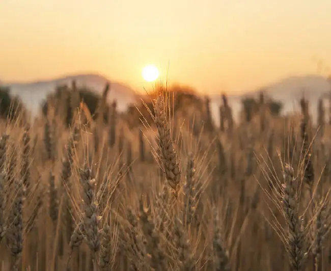
- How does the theory of human domestication affect your understanding of our relationship with agriculture?
- In what other ways do you think agriculture may have brought about human domestication?
Neolithic Peoples¶
By around nine thousand years ago, groups in a few different areas around the world were not only practicing agriculture but also beginning to establish large and complex permanent settlements. A number of these Neolithic settlements emerged in Europe, the Near East, China, Pakistan, and beyond. One of the largest to be excavated today is in southeastern Turkey, at a site known as Çatalhöyük (pronounced cha-tal-HOY-ook). Evidence indicates this site was occupied for about twelve hundred years, roughly between 7200 and 6000 BCE. It covers more than thirty acres, and at its height it may have been home to as many as six thousand people.
Houses at Çatalhöyük were made with mud brick and were clustered together without roads or passages between them. This design required that residents enter their homes from the roof, but it provided them with protection from the outside world. Thanks to extensive excavation at the site, we can tell that the people who built and lived in Çatalhöyük included farmers, hunters, and skilled craftspeople with complex religious ideas. Their rooms include many examples of art, such as depictions of hunts and various kinds of animals, and even what may be representations of their myths, such as a woman giving birth to a bull. Cattle imagery abounds in Çatalhöyük, including bull heads with large horns and bull horns protruding from furniture, suggesting that the people who lived there venerated the animal (Figure 2.22).
![A picture of four stone animal heads hung on a wall in wood frames is shown. The stones are gray and brown with one large one at the top and two medium ones on either side across the bottom and a very small one in the middle of those two in the bottom row. The head on top has two sets of horns, a large protruding forehead and no facial features. The two heads on the ends along the bottom have one set of horns, wide heads, and no facial features. The small one in the bottom middle is long and thin and has circular objects sticking out at the sides and no facial features. There is a small placard below the small animal head.](img/osx-worldhist-a02-03-catalhoyuk.webp)
The people of Çatalhöyük lived a life that was neither fully agricultural nor hunter-gatherer. Instead, they combined the two strategies. They had domesticated animals like cattle; grew a variety of domesticated plants like wheat, lentils, and barley; and may even have used some form of irrigation system to increase agricultural production. Yet they also relied on hunting wild animals for meat and gathering wild edible plants like walnuts, various types of berries, pears, and crab apples. It seems clear that their wealth was derived from trade in agricultural products, woven items, clay vessels, and especially obsidian, a naturally occurring volcanic glass. Because it can be chipped to create a razor-sharp edge, obsidian would have been a highly valued trade item for people in need of effective tools for butchering and other chores. The obsidian of Çatalhöyük was obtained from a nearby volcano and traded to people as far away as Syria and Cyprus.
Link to Learning
The Çatalhöyük Research Project provides up-to-date information about excavations at the site, as well as detailed descriptions of its architecture and artifacts and the way its people may once have lived.
Far to the south of Çatalhöyük, in the Jordan River valley east of Jerusalem, was an even older Neolithic city, Jericho. Archaeologists estimate that Jericho was occupied as early as 8300 BCE. Its construction was very different from that of Çatalhöyük. Rather than being composed of homes with adjoining walls for protection, Jericho was protected by a large ditch and a thick stone wall that encircled the settlement. Within the settlement there was also a large stone tower, the purpose of which remains unclear. Nearby were similar Neolithic settlements at Ain Ghazal and Nahal Hemar. And far to the north on the Euphrates River was Abu Hureyra.
Archaeologists have determined that all these sites and others were part of a culture often described as Natufian (Figure 2.23). The founding of most of them predates agriculture, and while their environments are very dry today, many thousands of years ago they were rich in wild edible plants and animals. It was likely the wealth of these resources that allowed the Natufian groups to settle there, only later adopting agriculture and building Neolithic settlements.
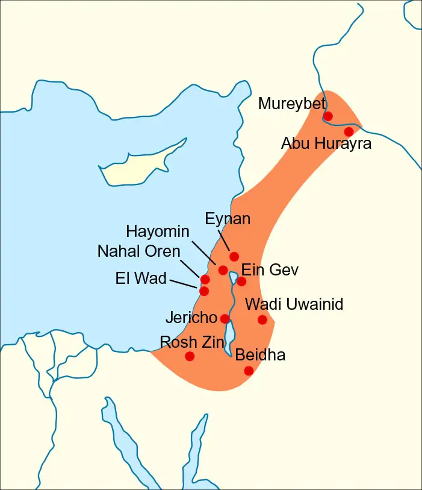
The earliest evidence of agriculture in South Asia has been found at the Neolithic settlement of Mehrgarh, situated in modern Pakistan to the north and west of the Indus River. As early as 7000 BCE, the people of this community were farming barley and raising goats and sheep. A few thousand years later they began domesticating cotton. Barley cultivation techniques may have been brought to the area from the Near East, though they also may have been developed independently. The structures of the settlement itself were made of dried mud bricks, with homes designed in a rectangular shape and divided into four parts. The people of Mehrgarh included skilled artisans capable of using sea shells, sandstone, and the rich blue lapis lazuli. Many of these materials came from great distances away, indicating that the settlement engaged in some type of long-distance trade, as did other Neolithic settlements.
The earliest Neolithic settlements in China, from around 8000 BCE, were located along two of its major rivers, the Yellow and the Yangtze. Along the Yellow River, people mainly cultivated millet, while on the Yangtze it was rice. These were areas with an abundance of water, access to fertile grasslands, and a variety of edible plants and animals for gathering and hunting, and Neolithic settlements proliferated. The people domesticated pigs and dogs and supplemented their diets of rice and millet by hunting, fishing, and gathering wild plants. They also made cord from hemp and pottery from clay.
Two of the early sites discovered there are Pengtoushan and Bashidang, both located in the Yangtze River valley in modern Hunan province. They may have been settled as early as 7500 BCE and preserve evidence of some of the earliest cultivation of wild rice. Homes were made by either digging partially into the ground or building on earth platforms with a central post to hold up the roof. A large ditch surrounds Bashidang, which may have served to channel water from the settlement and into the river. This surrounding-ditch design has been found at other locations and gradually developed into a type of moat around the settlements.
In other areas around the world, the shift to agriculture happened in similar fashion. Sites with permanent settlement, the practice of agriculture, the use of pottery, and other characteristics associated with particular Neolithic cultures have been discovered in a great number of places. The earliest known agricultural settlements in the Americas have been found in northeastern Mexico, where as early as 6500 BCE people were cultivating plants like pepper and squash. In the Andes Mountains region of South America, Neolithic settlements growing potatoes and manioc began to emerge as early as 3000 BCE. The cultivation of taro in New Guinea may have begun as early as 7000 BCE. Along the Danube River valley in Europe, Neolithic settlements began to emerge around 6000 BCE, likely having adopted cereal farming from the Near East. And in central Africa, farming of white Guinea yams began around 5000 BCE, later including crops like millet and sorghum.
Chapter Review¶
Key Terms¶
- Acheulean tools
- stone tools made by carefully chipping away flakes of the stone core to make them into teardrop-shaped implements that replaced the cruder Oldowan hand-axes
- animism
- the belief that a degree of spirituality exists not only in people but also in plants, inanimate objects, and natural phenomena
- Australopithecus
- a very distant ancestor of modern humans who lived in eastern and southern Africa between 2.5 and 4 million years ago
- Fertile Crescent
- a crescent-shaped geographical area in the Middle East where agriculture first flourished
- genus
- a taxonomic rank that includes several similar and related species
- Homo erectus
- a member of the genus Homo who emerged in East Africa around two million years ago, living entirely on the ground and walking exclusively in an upright position
- Homo habilis
- the earliest member of the genus Homo, appearing in the archaeological record about two to three million years ago
- Homo sapiens
- modern humans, members of the genus Homo who emerged in Africa first and later migrated to other areas
- hunter-gatherers
- people who survive by employing the strategies of hunting animals and gathering wild plants rather than by planting crops and raising livestock
- Mousterian tools
- stone tools and hand-axes made beginning around 250,000 years ago and consisting of flakes rather than cores
- Neanderthals
- members of the genus Homo who evolved from Homo erectus and lived in Europe and western Asia between 30,000 and 200,000 years ago
- Neolithic Age
- the final phase of the Paleolithic Age, beginning around twelve thousand years ago when human populations began growing crops and domesticating animals
- Neolithic Revolution
- the shift from hunting and gathering to a life based primarily on agriculture
- Oldowan tools
- sharpened stones used until about 1.7 million years ago for a variety of cutting, scraping, and chopping purposes
- Paleolithic Age
- the period of time beginning as early as 3.3 million years ago until nearly twelve thousand years ago, when our distant pre-human ancestors began using stone tools for a variety of purposes
Summary¶
2.1 Early Human Evolution and Migration¶
For about the last thirty thousand years, modern humans, or Homo sapiens, have been the only human species walking the Earth. But not only did several different human species once share the planet; they also evolved from much older and very different ancestors who began forging the path of global migration that modern humans later followed. Many tens of thousands of years or more later, Homo sapiens began creating sophisticated stone hand-axes from rock cores and mastered the use of fire for cooking, staying warm, guarding against predators, and creating places for social interaction. They used their keen ability to produce a variety of sounds to construct languages that allowed them to communicate complex ideas and pass important information to later generations. They created art that still speaks to us today. With all these tools, modern humans were able to migrate around the globe and create a diversity of cultures, traditions, and lifestyles.
2.2 People in the Paleolithic Age¶
Beginning perhaps as early as 100,000 years ago, modern humans began leaving Africa and migrating far and wide. That this movement occurred during the start of the most recent glaciation period suggests that climatic changes may have been a motivating factor. Over time, these migrating humans found themselves in a great variety of environments that required them to develop appropriate tools and strategies. In very frigid parts of the world, for example, they fashioned tools like sewing needles to create sophisticated clothing for keeping out the cold.
For many tens of thousands of years, these groups lived a hunter-gatherer lifestyle, relying on edible plants as well as meat that could be either scavenged or hunted. Their diets varied from place to place but often included foods like wild grains, berries, honey, small and large mammals, fish, and shellfish. What we know or guess about these populations comes from both archaeological work and observations of the few modern hunter-gatherer societies that remain.
2.3 The Neolithic Revolution¶
The changes that came with the Neolithic Revolution beginning about twelve thousand years ago dramatically transformed human life. The adoption of agriculture and the domestication of animals allowed for larger populations, surpluses of food, and labor specialization, even as they reduced leisure time and restructured formerly egalitarian societies into hierarchical tiers. From the remains of Neolithic settlements we can get a sense of life at this important moment in our species’ history. The remains of Çatalhöyük feature rooms decorated with art and a settlement designed for protection. The art and architecture from there and from other places like Göbekli Tepe demonstrate both skill and high degrees of cooperation. They also show modern humans in a transitional period between the hunter-gatherer world and the fully agricultural one. Over time, hunter-gatherer lifestyles were abandoned in most places as agricultural settlements grew.
Review Questions¶
2.1 Early Human Evolution and Migration¶
1.
2.
3.
4.
5.
2.2 People in the Paleolithic Age¶
6.
7.
8.
9.
2.3 The Neolithic Revolution¶
10.
11.
12.
13.
14.
Check Your Understanding Questions¶
2.1 Early Human Evolution and Migration¶
15.
16.
17.
18.
2.2 People in the Paleolithic Age¶
19.
20.
21.
2.3 The Neolithic Revolution¶
22.
23.
24.
Application and Reflection Questions¶
2.1 Early Human Evolution and Migration¶
25.
26.
2.2 People in the Paleolithic Age¶
27.
28.
2.3 The Neolithic Revolution¶
29.
30.
Adapted from World History, Volume 1, to 1500 by OpenStax, licensed under CC BY 4.0. Access the original for free at openstax.org. Changes: converted to the web reading format of The Open Book Project.